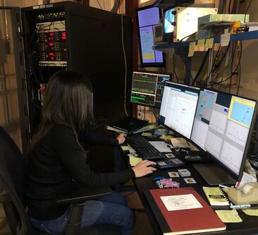
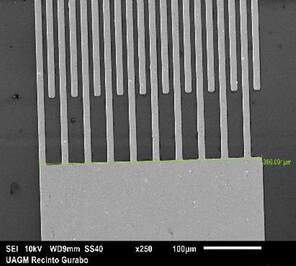
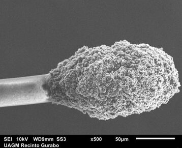
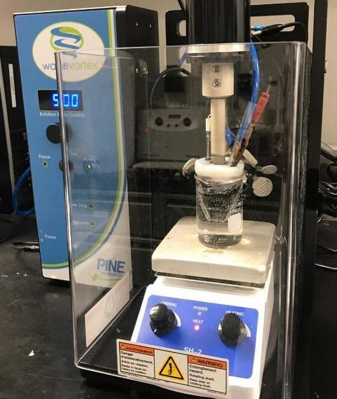
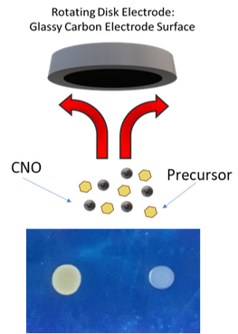

Due to the problems that exist regarding climate change and how it affects the environment, we as citizens have the obligation to do something about it. In the last decades, we have had a problem with the electrical energy system on our island of Puerto Rico and it is for this reason that we have the responsibility to create alternatives to obtain renewable energy in an economic way to avoid fossil fuels. My research focuses on generating an electrocatalyst that is efficient, economic, and eco-friendly. The goal of the investigation is modifying onion-like carbon nanoparticles using nitrogen-containing molecules to encapsulate non-precious metals as electrocatalysts for the oxygen reduction reaction. Then, we are working together with CHESS to study them using synchrotron x-ray techniques.

My research is directed toward the development of bioanalytical techniques based on electrochemistry for the detection and monitoring of biomolecules. There are many advantages of using electrochemistry over other techniques that use light-based detection. Avoiding the use of light for measurements allows the detection of biomolecules in raw fluids without the need of purification. In addition, the versatility to change the material of the electrodes and to modify their surfaces, provide specificity toward the biomolecule of interest. Among the materials that we are using are carbon and platinum. They can be used alone or changing their surface, by self-assembly monolayers using thiols and/or adding conductive polymers to increase the selectivity of the specific analyte. The availability of having a novel electrochemical technique to the measurements of biomolecules will provide another alternative to the neurochemistry field.

My research project is based on the development and manufacture of biosensors that can be used comfortably on the skin, for the analysis of analytes in sweat in real-time. These biosensors consist of flexible materials and have an electrochemical interface. Through electrochemical techniques, we seek to analyze analytes that have not been studied in sweat. The advance in the development of biosensors is of great importance for the field of biomedicine and health professionals. It is also of great benefit for people who have a condition or disease and for athletes or people who carry out some physical activity.

This research is aimed at developing innovative catalysts for application in fuel cells. The particularity of these catalysts is the improvement of supports for metals that can increase the efficiency in obtaining clean energy and represent a new way in the search for better alternatives to produce more eco-friendly energy. In this way, we contribute to the environment in the search for alternatives that can help eliminate the use of fossil fuels.

This research is focused on two principal steps. First, the development of Carbon Nano Onions (CNO) with specific chemical properties using carbon nano-diamonds as parent material; being our laboratory the firsts on the development of this nano material on the Caribbean. Using this material, we prepare graphene oxide quantum dots, a nanomaterial with the potential to use it as a biomarker that emits fluorescence when is exposed to UV light. Second, we are focused on using our highly dispersed CNO previously developed with an energy focus. This nanomaterial is tested to be used as support for metal-free electrocatalysts for the oxygen reduction reaction. To execute this research, the rotating disk electrode and different electrochemical technics are used for the development of the CNO nanohybrids.